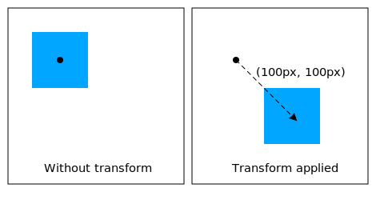

CSS3
The beauty of the web
Created by Leijun Yang
Before the introduction, do you know?
- What is CSS?
- Why use CSS?
What is CSS
- Cascading Style Sheets (CSS) is a language for specifying how documents are presented to users.
- The primary goal of CSS is to allow separation of a document's presentation characteristics (formatting) from the document's content.
Why use CSS
CSS helps you to keep the informational content of a document separate from the details of how to display it. You keep the style separate from the content so that you can:
- Avoid duplication
- Make maintenance easier
- Use the same content with different styles for different purposes
Exercise 1
What does the following CSS selector match
.miniGuide #programInformationIcon,
.microEpg #programInformationIcon {
background-position: 0px -180px;
}
Exercise 2
Find bugs
p {
margin: 5px 10px
font: arial;
text-align: top;
color: blue;
}
CSS3

Understanding transforms
CSS transforms allows elements styled with CSS to be transformed (translate,scale,rotate) in two-dimensional or three-dimensional space.
Two-dimensional transform

div {
transform: translate(100px, 100px);
}
Three-dimensional transform
div {
transform: rotateY(50deg);
}
Understanding Transitions
CSS3 transitions enables us to animate smoothly from the old state to the new state over time.
Transition properties
a {
color: white;
transition-property: color;
transition-duration: 0.7s;
transition-timing-function: ease-in;
transition-delay: 0.3s;
}
a:hover {
color: red;
}
Transition on Video
SampleUsing Animations
CSS3 animation enables us to create animations without JavaScript by using a set of keyframes.
Animations states specified by keyframes
@keyframes wobble {
0% {left: 100px;}
40% {left: 150px;}
60% {left: 75px;}
100% {left: 100px;}
}
Animation properties
div {
animation-name: wobble;
animation-duration: 1s;
animation-timing-function: ease-in-out;
animation-delay: 0.5s;
animation-iteration-count: 2;
animation-direction: alternate;
animation-play-state: running;
animation-fill-mode: forwards;
}
Question
What’s the difference between CSS3 animations and JavaScript animations?
Question
How to create a pure CSS3 Cycle Slider using CSS3?
Pure CSS3 Cycle SliderMedia Queries
A media query consists of a media type and zero or more expressions that check for the conditions of particular media features.
Media features
- width/height
- aspect-ratio
- orientation
- color
- resolution
- ...
Example - Width
This media query expresses that the style is usable on on devices with viewport width larger than 500 pixels
@media (min-width:500px) {}
Screen Resolutions - Device Width Breakpoints
- Smartphone: 320px
- Tablet: 768px
- Netbook: 1024px
- Desktop: 1600px
A collection of inspirational websites using media queries
Media QueriesExercise 1
What does this mean?
@media (max-width: 320px) {
.miniGuide #programInformationIcon{
display: none;
}
}
Exercise 2
Create a responsive web page (12 Divs):
- Smartphone: list view
- Tablet: 2 column grid view
- Netbook and Desktop: 4 column grid view